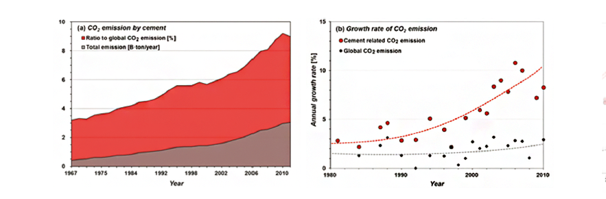

주제별 연구성과
주제별 연구성과
KAIST RESEARCH ACHIEVEMENTS
바이오 폴리머를 이용한
친환경 지반 건설 재료
건설및환경공학과 조계춘
요약
최근, 친환경 지속가능한 발전의 일환으로, 지반 공학 분야에서, 시멘트 등 화학계열 지반재료들을 대체하기 위한 수요와 관련 연구가 증가하고 있다. 본 연구는 친환경 미생물 기반 바이오폴리머를 활용한 지반개량의 가능성 및 성능 검증에 관한 연구를 수행하여 세계 최초의 미생물 기반 바이오폴리머 지반개량법을 개발하였다. 이와 관련하여 다수의 연구성과물(SCI논문 8편, 국내외 지적재산권 11건) 확보는 물론 바이오폴리머를 건설재료화한 KABS (KAist Bio-Soil) 바인더를 독자 개발하여 다양한 시험시공을 통해 그 성능과 시공성을 입증하였으며 이를 토대로 산업체 기술이전과 한국도로공사, LH공사 등과 함께 바이오폴리머 지반개량 기술 상용화를 추진하고 있다.
연구배경
지반 처리 및 개량은 지반을 강화, 안정시키는 공법이다. 대부분의 지반 처리, 개량 분야에서 시멘트가 사용되어왔으며 2012년 전 세계 건설 분야 시멘트 사용량은 52억 4500만 톤에 이른다. 시멘트는 생산 과정에서 다량의 이산화탄소(전 세계 이산화탄소 배출량의 7%)가 발생된다. (그림1)에서 드러나듯 시멘트 수요의 증가로 인해 이산화탄소 배출이 증가하고 있는 실정이다. 또한 시멘트는 토양 pH 증가, 홍수 및 수질 오염 유발 등 다양한 환경 문제를 야기한다. 지구온난화 문제에 적극적으로 대응하고, 토양 염기화와 우수 유출 문제를 해결하는 친환경 차세대 지반건설 바이오 신재료로써 미생물 기반 바이오폴리머를 활용한 연구를 수행하였다.
 연도별 세계 시멘트 관련 CO2 발생량
연구내용
바이오폴리머는 미생물의 생체활동을 통해 생산되는 유기고분자를 총칭한다. 인장강도가 뛰어나며, 생산 과정에서 이산화탄소 발생이 거의 없는 친환경 재료이다. 또한 흙 입자와 직접 결합을 형성하여 강도를 증진시킬 수 있다는 점에서 다양한 지반건설 분야에 적용이 가능하다. 식품, 농업, 화장품, 의약품 분야 등에서 바이오폴리머가 경화제 및 젤화(gelation)제 등으로 사용되고 있으나 건설 분야 적용 사례는 전무한 실정이다. 본 연구진이 개발한 바이오폴리머 기반 바이오쏘일 지반개량법은 세계최초의 개발 및 실용화 사례이며, 건설 분야에 폭 넓게 적용될 수 있을 것으로 기대된다.
바이오폴리머 흙의 공학적 특성 파악
바이오폴리머 지반 적용으로 지반 강도에 획기적인 향상을 얻을 수 있음을 밝혔다. 소량(0.5%) 바이오폴리머 주입으로 10% 시멘트 주입량과 대등한 강도 증진 효과를 얻을 수 있다. 바이오폴리머 처리 흙은 토양의 식생 활착 및 생장을 증진시킬 수 있으며, 따라서 바이오폴리머의 친환경성을 입증할 수 있다. 또한 바이오폴리머는 흙의 전단강도, 점착력, 내부마찰각, 침식저항성 등을 증진시키며, 투수계수를 감소시키는 효과를 지니고 있다.
KABS 바인더 개발과 현장적용
- 2012.06: 충남 천안, 성토비탈면 표층보강 처리(살포 및 침투) 시험시공
- 2013.04: 전북 진안, 바이오폴리머를 이용한 친환경 흙 건축(전통 한옥) 시험주택 시공
- 2013.05: 충북 증평, 현장발생토-바이오폴리머 직접 혼합을 이용한 절토비탈면 표층보강 시험시공
- 2015.11: 대전 KAIST, KABS™ 바인더를 이용한 친환경 흙 길 조성
- 2016.05: 충남 서산, KABS™ 바인더를 이용한 화강풍화토 비탈면 표층보강 시험시공(한국도로공사)
현장 적용 경험을 토대로 하여, KABS™ 전용 시공 장비 설계 및 제작 중
 바이오폴리머 처리 흙의 강도 증진 효과(좌), 결합 메커니즘(중), 식생 증진 효과(우)
바이오폴리머 처리 흙의 강도 증진 효과(좌), 결합 메커니즘(중), 식생 증진 효과(우)
 친환경 흙 건축(전통 한옥) - 전북 진안
친환경 흙 건축(전통 한옥) - 전북 진안
 바이오폴리머 기술의 현장 적용
바이오폴리머 기술의 현장 적용
우수성과 및 기대효과
- 총 8편의 SCI급 논문, 11건의 국내외 지적재산권(등록 4건, 출원 5건, 국외출원 2건)을 확보, 2건의산업체 기술이전(유비이앤씨,제영이앤씨)을 실시. 한국도로공사, LH공사 등과 적극적으로 실용화추진
- 국내 친환경 건설 시장은 2015년 19조 5700억원 규모, 성장률 약 16%의 고 성장 산업으로 바이오 폴리머 기술을 통해 1%의 친환경건설 시장을 점유할 시, 약 2,270억원 규모의 매출(2017년 기준)기대
참고자료
[논문1] Chang, I. Im, J., Prasidhi, A.K., and Cho, G.C., 2015, "Effects of Xanthan gum biopolymer on soil strengthening", Construction and Building Materials, Elsevier, Vol. 74, pp. 65-72.
[논문2] Chang, I., Kharis, P.A., Im, J., Shin, H.D., and Cho, G.C., 2015, "Soil treatment using microbial biopolymers for anti-desertification purposes", Geoderma, Elsevier, Vol. 253- 254, pp. 39-47.